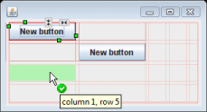
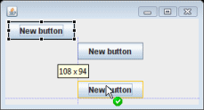
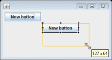

A program written in Java may be deployed on multiple platforms. If you were to use standard UI design techniques, specifying absolute positions and sizes for your UI components, your UI won’t be portable. What looks fine on your development system might be unusable on another platform. To solve this problem, Java provides a system of portable layout managers. You use these layout managers to specify rules and constraints for the layout of your UI in a way that will be portable.
 |
 |
 |
Layout managers can provide the following advantages:
-
Correctly positioned components that are independent of fonts, screen resolutions, and platform differences.
-
Intelligent component placement for containers that are dynamically resized at runtime.
-
Ease of translation. If a string increases in length after translation, the associated components stay properly aligned.
About layout managers
When writing Java applications, you may need to use layouts to give your windows a specific look. A layout controls the position and size of children in a container. Layout classes are subclasses of the abstract class Layout. Both SWT and Swing provide several standard layout classes, and you can write custom layout classes. Other UI toolkits embed implicit layout managers in each panel type.
In Java, positioning and sizing does not happen automatically. Applications can decide to size and place a container’s children initially, or in a resize listener. Another option is to specify a layout class to position and size the children. If children are not given a size, they will have zero size and they cannot be seen.
The layout manager sets the sizes and locations of the components based on various factors such as:
-
The layout manager’s layout rules.
-
The layout manager’s property settings, if any.
-
The layout datas associated with each component.
-
The size of the container.
Each layout manager has characteristic strengths and drawbacks. Grid-based layouts and constraint-based layouts are the most useful and powerful of the standard layouts, but they are also the most complicated. When using the design view, you can change the layout whenever you like. The tool adjusts the code as needed on the fly. Change the layout either by explicitly adding a layout manager to the source code for the container, or by selecting a layout for the composite on the design surface.